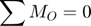

Problème 2/46, Meriam p. 47

Contents
Mo – démarche scalaire
Appliquer le théorème de Varignon.
- Évaluer les composantes rectangulaires de la force au point B.
- Pour chacune, déterminer le bras de levier par rapport à O.

clear; clc theta = atan2(100,400)*180/pi; % degrés mF = 40; % N (Norme) Fx = mF*cosd(theta); % N Fy = mF*sind(theta); % N dx = (25+400)/1000; % m (bras de levier de Fy) dy = (75)/1000; % m (bras de levier de Fx) Mo = Fx*dy + Fy*dx; % (sens horaire) fprintf('Norme de Mo = %.2f N·m',Mo); fprintf(' dans le sens horaire\n');
Norme de Mo = 7.03 N·m dans le sens horaire
Fc – démarche scalaire

d = (25+400+400)/1000; % m bras de levier de Fc mFc = Mo/d; % crée un moment opposé à Mo fprintf('Norme de Fc = %.2f N',mFc);
Norme de Fc = 8.53 N
Mo – démarche vectorielle
angle = -180+theta; % degrés convention de atan2 F = mF*[cosd(angle), sind(angle), 0]; % N roB = [25+400, -75, 0]/1000; % m Mo = cross(roB,F); Norme = norm(Mo); fprintf('roB = %+6.2fi %+6.2fj %+6.2fk m\n',roB); fprintf(' F = %+6.2fi %+6.2fj %+6.2fk N\n',F); fprintf('\nMo = %+6.2fi %+6.2fj %+6.2fk N·m\n',Mo); fprintf('Norme de Mo = %.2f N·m',Norme); MomentPositif = Mo(3) > 0; if(MomentPositif) fprintf(' dans le sens antihoraire\n'); else fprintf(' dans le sens horaire\n'); end
roB = +0.42i -0.07j +0.00k m F = -38.81i -9.70j +0.00k N Mo = +0.00i -0.00j -7.03k N·m Norme de Mo = 7.03 N·m dans le sens horaire
Vérification de Fc – démarche vectorielle
Vérifier que Fc produit Mc.
roC = [25+400+400, -75, 0]/1000; % N Fc = mFc*[0, +1, 0]; Mc = cross(roC,Fc); NormeMc = norm(Mc); fprintf('Mc = %+6.2fi %+6.2fj %+6.2fk N·m\n',Mc); fprintf('Norme de Mc = %.2f N·m',Norme); MomentPositif = Mc(3) > 0; if(MomentPositif) fprintf(' dans le sens antihoraire\n'); else fprintf(' dans le sens horaire\n'); end
Mc = -0.00i +0.00j +7.03k N·m Norme de Mc = 7.03 N·m dans le sens antihoraire